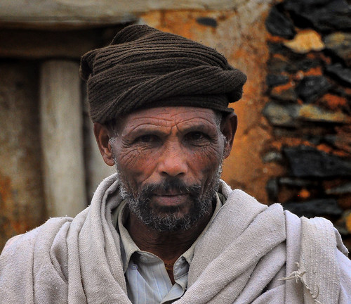

What's Really Going On
If you ever visit Ethiopia and ask someone what year it is, you're likely to get an answer that surprises you: while the rest of the world moved on to a given date under the Gregorian calendar, Ethiopia was still counting nearly eight years behind. This isn't a technological lag or a perceptual error: Ethiopia officially uses its own calendar, the Ethiopian calendar, a system with centuries of history that runs, fully and functionally, alongside the international calendar in documents, passports, and administrative life.
The gap between the two calendars stems from an ancient theological disagreement over the exact calculation of the year Jesus Christ was born, a debate that split different branches of early Christianity more than fifteen hundred years ago. While the Roman Catholic Church later adopted the calculation that would go on to become today's Gregorian calendar, used across most of the world, the Ethiopian Orthodox Church — one of the oldest Christian traditions on the planet, with roots stretching back to the 4th century — kept a different calculation, inherited from the ancient Egyptian Coptic calendar, which places that date several years later.
That difference in calculation, compounded over centuries, is what produces the roughly seven-to-eight-year gap between the two systems. But the difference doesn't stop there: the Ethiopian calendar also organizes the year differently, with twelve months of exactly thirty days each, plus a short thirteenth month called Pagumē, of five days (six in leap years), which completes the solar cycle. That thirteenth month is, in fact, the basis for one of Ethiopian tourism's most-used slogans: "Ethiopia, thirteen months of sunshine."
Ethiopia celebrates its New Year, Enkutatash, in September, right as the rains end and the fields fill with yellow flowers.
Where This Comes From
This calendar isn't a mere folkloric symbol reserved for religious holidays — it's in genuine daily use. Official documents, contracts, news broadcasts, work schedules, and even the Ethiopian banking system all run on Ethiopian calendar dates, though in international contexts — passports, diplomatic agreements, foreign trade — the equivalent Gregorian date is also included to ease communication with the rest of the world. This double bookkeeping of time is such a natural part of Ethiopian life that most people manage both systems without much difficulty, switching between them depending on context.
Alongside this calendar quirk sits another Ethiopian custom that confuses visitors even further: the country's traditional time system doesn't start counting hours at midnight, like the rest of the world, but at dawn, around six in the morning by the international clock. That means what the international calendar calls seven in the morning is, in traditional Ethiopian time, "one o'clock," the symbolic start of the active day. The system has clear practical logic in a country close to the equator, where day and night length barely varies through the year, making sunrise a far more stable and meaningful reference point than an abstract midnight.
Beyond the Basics
Ethiopia celebrates its own New Year, called Enkutatash, not in December but in September, coinciding with the end of the rainy season and the blooming of yellow Meskel flowers across the fields, when the Ethiopian landscape transforms almost overnight. The celebration blends music, traditional door-to-door songs performed by children, and family meals, symbolically marking both a new agricultural cycle and a spiritual one, in a country where Orthodox Christianity remains deeply influential in everyday life.
The gap between calendars produced one unforgettable moment in 2007, when Ethiopia marked its own turn of the millennium — celebrating the year 2000 on the Ethiopian calendar a full seven years after the rest of the world had already done so. The government launched a major international tourism campaign around the event, complete with a purpose-built convention center in Addis Ababa, hoping to draw global attention to the country's singular relationship with time.
In practice, Ethiopians navigate both calendars daily without much friction: banks print statements with both dates, smartphones sold in the country often include Ethiopian calendar apps as a default alongside the Gregorian one, and government offices routinely stamp documents with dual dates to avoid confusion for anyone dealing with international partners. Far from being an inconvenience, most Ethiopians describe the dual system as simply how time has always worked.

What to Know If You Visit
Planning around two calendars in Ethiopia is easy once you know this:
- Double-check dates on official documents, flight bookings, and visas — confirm whether they're listed in the Ethiopian or Gregorian calendar.
- Ethiopian New Year (Enkutatash) falls in September — a lovely time to visit for festivities and blooming fields.
- Ethiopian time also starts at dawn, so when locals say "seven o'clock," clarify whether they mean local or international time.
- Business meetings usually run on Gregorian time for international clarity, but cultural events often follow the Ethiopian calendar.
- If someone quotes their age or a historical date and it sounds off, ask which calendar they're using before assuming a translation error.
- The 13th month, Pagumē, is a great trivia fact to bring up with locals — most enjoy explaining it to curious visitors.
The Bigger Picture
What's fascinating about this case is that it challenges a very widespread assumption: that time is something objective, universal, and non-negotiable. Ethiopia shows, quite naturally, that measuring years, months, and even hours of the day is, at bottom, a cultural convention built on specific religious and historical decisions. The rest of the world simply ended up adopting one system among several possible ones, and Ethiopia, with a deeply rooted cultural and religious identity, chose to keep its own — running in parallel, with no need to fully sync up with anyone else.
Curious how nearby cultures handle similar rules? Don't miss our pieces on Buying Without Haggling in Morocco Is Almost Bad Manners and The Country That Measures Happiness Instead of GDP.